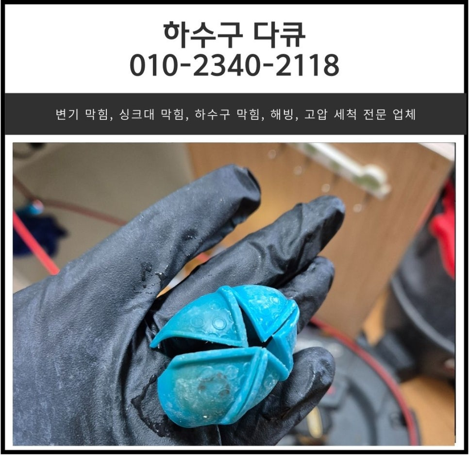
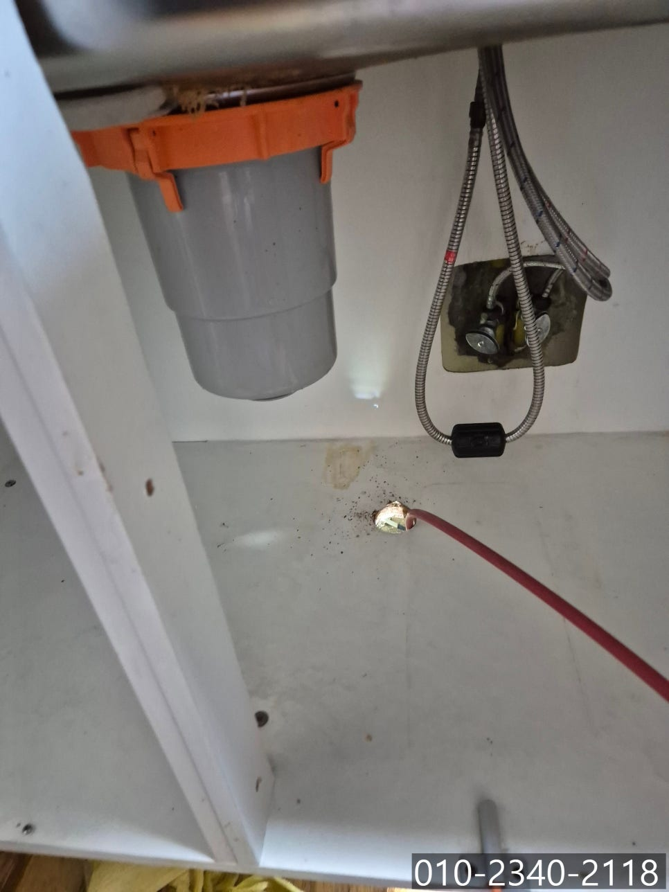
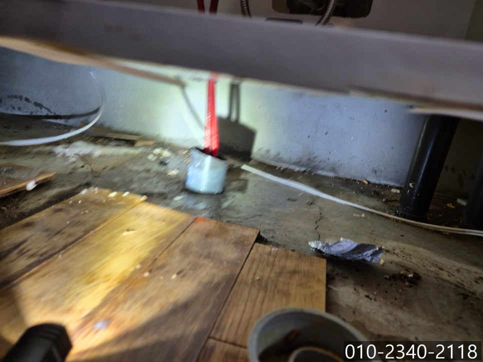
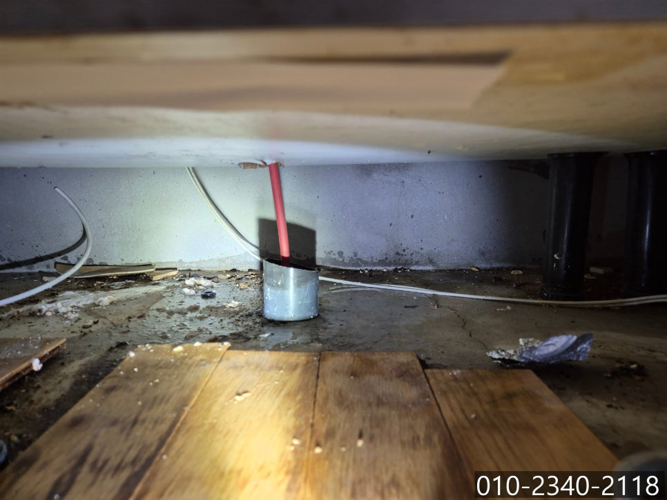
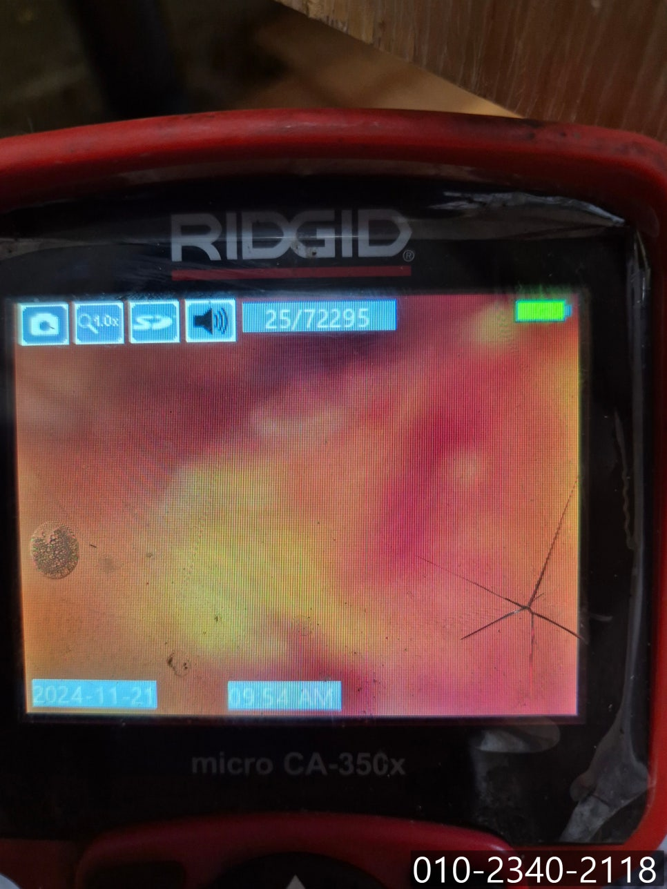
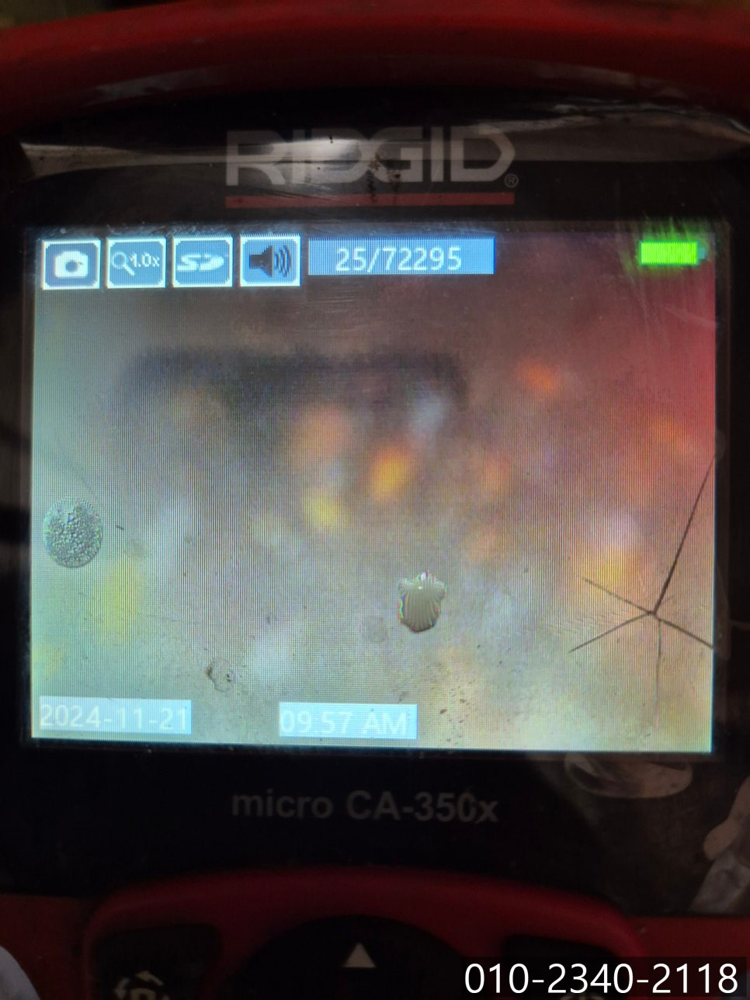
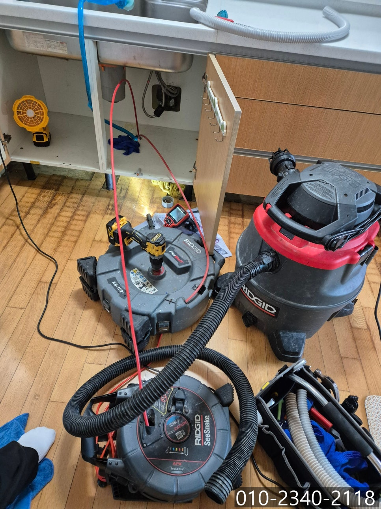

🏠 모현읍 싱크대 막힘 용인 포곡읍 하수구 배관 역류 전문 설비 업체
용인 모현읍 싱크대막힘 전문 시공 후기

📋 작업 개요
- 위치: 용인 모현읍, 모현읍, 용인
- 서비스 유형: 싱크대막힘, 하수구막힘, 배관막힘, 누수수리, 역류해결, 뚫는업체, 배관청소
- 작업 일시: 2024. 11. 28. 10:00
- 업체명: 하수구수사대 (010-5615-2118)
🔍 문제 상황
안녕하세요.
모현읍 싱크대 막힘, 용인 포곡읍 하수구 배관 역류 전문 설비 업체 하수구 다큐입니다.
매일 사용하는 싱크대가 막혀서 직접 뚫어보기 위해 시도해 보신 적 있으신가요?
네이버에 검색해 보면 다양한 방법을 어렵지 않게 찾을 수 있다 보니 하수구 막힘이 발생하게 되면 셀프로 해결해 보시려는 분들이 정말 많은데요.
간단하게 정리해 보면 아래와 같은 방법들이 있습니다.
아주 뜨거운 물을 천천히 부어주게 되면 배관에 쌓여있는 기름때나 음식물 찌꺼기들이 뜨거운 물로 인해 풀어지거나 불려주어 떨어져 나가 통수가 가능해집니다.
베이킹 소다를 배수구에 3~4스푼 정도 넣어준 다음 배수관 안쪽으로 밀어 넣어 주고 식초 2~3스푼을 부어줍니다. 그러면 베이킹소다와 식초가 만나 부글부글 거품이 올라오는데요. 5분~10분 정도 기다린 다음 따뜻한 물 500ml를 천천히 부어주면 기름때가 서서히 녹아 뚫리게 됩니다.

🔎 원인 분석
💡 전문가 진단: 정밀 진단 장비를 사용하여 슬러지의 고착 여부를 판명하고 타격/세척 작업을 실시했습니다.
시중에서 쉽게 구할 수 있는 배수구 클리너를 사용해 해결할 수 있습니다.
어렵지 않은 방법으로 싱크대 막힘을 셀프로 해결할 수 있지만, 대부분의 모현읍 싱크대 막힘의 경우 정말 많은 이물질이 배관에 쌓여 셀프로는 뚫기 어려운 현장들이 많아요.
오늘 소개해 드릴 모현읍 싱크대 막힘 현장 역시, 고객님께서 직접 해결해 보기 위해 배수구 클리너를 사용하고, 뚫어뻥도 사용해 봤지만 크게 달라지지 않아 용인 포곡읍 하수구 배관 역류 전문 설비 업체 하수구 다큐로 도움을 요청하셨어요.
모현읍 싱크대 막힘으로 연락을 받고 신속하게 방문해 싱크대 점검을 시작했어요.
유선상 말씀해 주셨던 것처럼 싱크대 역류로 인해 마룻바닥이 젖어있는 것을 어렵지 않게 발견할 수 있었습니다.
대부분의 가정집은 물을 많이 사용하는 화장실 바닥은 방수처리를 하지만 주방 바닥은 따로 방수처리를 하지 않다 보니 용인 포곡읍 하수구 배관 역류가 진행되는 상태로 방치하게 되면 자칫 아랫집으로 물이 스며들어 누수로 인한 피해까지 복구하는 경우도 종종 있습니다.
그렇기 때문엔 하수구 배관 역류가 발생하면 주저하지 마시고 전문가의 도움을 받아 해결하셔야 해요.
포곡읍 하수구 배관 역류 전문 설비 업체 하수구 다큐가 내시경 카메라를 배관 내부로 진입시켜보니 예상했던 대로 엄청난 양의 이물질을 확인할 수 있었습니다.

🔧 작업 과정
옆에서 배관 내부를 지켜보시던 고객님께서 이렇게 많은 이물질이 쌓여있을 줄 전혀 생각하지 못했다고, 내부를 확인해 보니 왜 포곡읍 하수구 배관 역류가 발생했는지 알 것 같다고 하셨어요.
근본적인 원인을 파악한 용인 포곡읍 하수구 배관 역류 전문 설비 업체 하수구 다큐는 필요한 장비를 이용해 청소 작업에 돌입했습니다.
모현읍 싱크대 막힘을 해결해 줄 장비는 플렉스 샤프트에요.
플렉스 샤프트 장비는 얇은 노즐로 배관 깊은 곳까지 진입해 작업하기 수월한 장비로 노즐 끝에 달려있는 쇠사슬 모양의 체인이 360도로 회전하며 이물질을 잘게 부서 주는 역할을 합니다.
잘게 부서진 이물질은 석션 장비를 이용해 빨아드려 완벽하게 제거해 줄 거예요.
여러 차례 플렉스 샤프트로 이물질을 갈아내고 석션으로 빨아들이는 작업을 반복하자 이물질이 조금씩 사라지고 배관의 모습을 들어내기 시작합니다.
아직 소량의 이물질이 남아있어 몇 차례 더 작업을 진행하자 완전히 새것처럼 깨끗해진 배관을 확인할 수 있었어요.
마지막으로 많은 양의 물을 흘려보내며 배관이 파손되거나 다른 문제는 없는지 점검해 드리고, 장비를 챙겨 철수할 수 있었습니다.
싱크대 막힘이 발생하게 되면 셀프로 해결하기는 생각보다 쉽지 않아요.
평소에 신경 써서 관리해 주시며 막힘을 최대한 늦춰주시는 게 가장 좋고요.
모현읍 싱크대 막힘이 발생하게 되면 배관 역류 전문 업체로 연락해 근본적인 원인을 해결하시는 게 가장 현명한 방법입니다.
지금 하수구 역류로 고민하고 계시나요?


✅ 작업 완료
스트레스받지 마시고 연락 주세요.
시원하게 뚫어드리겠습니다.
경기도 용인시 처인구 중부대로1313번길 20-25 2층 202호 나21




⚠️ 베란다 누수 및 방수 관리 방법
- ✅ 비가 많이 올 때 창틀 주변이나 아래층 천장에 얼룩이 생기는지 정기적으로 확인해 보세요.
- ✅ 우수관 주변 실리콘 마감이 들뜨거나 깨진 틈새가 있는지 손상 여부를 수시로 체크하세요.
- ✅ 베란다 바닥 타일의 줄눈(메지)이 소실되면 그 틈으로 물이 침투하여 누수가 유발됩니다.
- ✅ 누수 의심 증상 발견 시 방치하면 아래층 손실이 커지므로 즉시 전문가의 진단을 받으십시오.
💡 핵심 정리
- 확실한 장비 작업(내시경 점검 및 샤프트 스케일링)으로 원인을 뿌리 뽑습니다.
- 작업 후 1년 이내에 동일한 부위 재발 시 100% 무상 A/S 서비스를 보장합니다.
- 서울 · 경기 · 인천 전 지역에 24시간 언제든 긴급 출동할 수 있도록 항시 대기 중입니다.
❓ 자주 묻는 질문 (FAQ)
🚨 용인 모현읍 싱크대막힘 문제로 고민이신가요?
정확한 원인 진단과 확실한 시공으로 재발 없는 해결을 약속드립니다.
24시간 긴급 출동 | 서울 · 경기 · 인천 전지역 | 1년 내 재발 시 무상 A/S